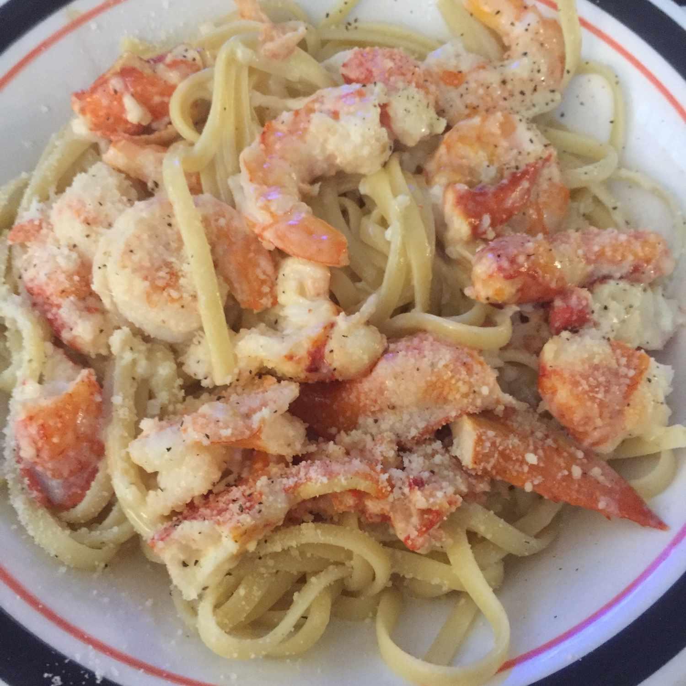

Italian Seafood Linguine

Ingredients
- 2 cups mixed seafood (shrimp, clams, mussels, calamari rings, cod, haddock) calamari rings and haddock cut in small pieces)
- ¼ cup chopped fresh parsley
- ¼ cup olive oil
- 1-3 dashes hot pepper flakes
- 1-2 pinches salt to taste
- ¼ cup white wine (good quality) optional
- 300 grams dry linguine or spaghetti
Steps
- In a large pot of boiling salted water add linguine and cook very al dent.
- While pasta is cooking, in a large skillet or frying pan add the olive oil, seafood, chopped parsley, hot pepper flakes and salt to taste. Cook on medium heat until fish is cooked. If you wish to add wine add it with the seafood and cook on high for 30-60 seconds until evaporated then continue with the cooking.
- Drain pasta (keeping 1/2 ladle of pasta water), add pasta to frying pan with pasta water, gently toss and cook for another 30-60 seconds, while tossing occasionally. Serve immediately, sprinkled with some chopped parsley.
- OAdd the pasta and ¼ cup pasta water to the frying pan, gently toss and cook for another minute or two. Serve immediately, sprinkled with some freashly chopped parsley.